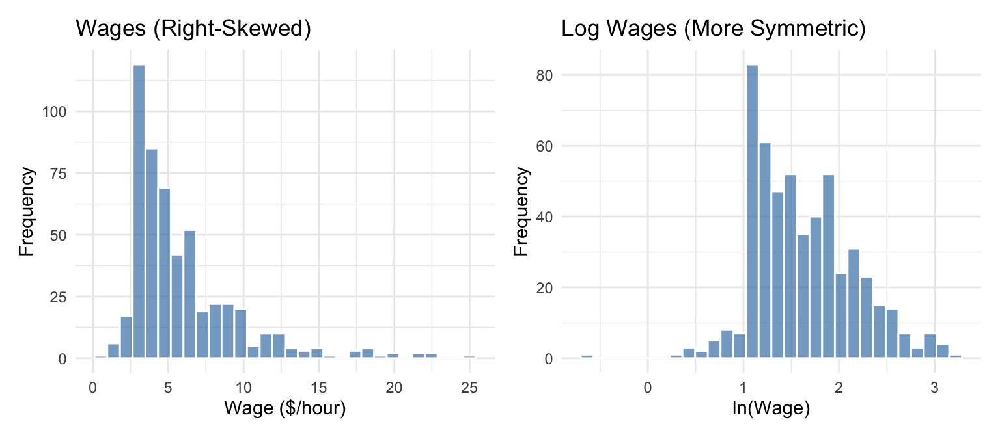
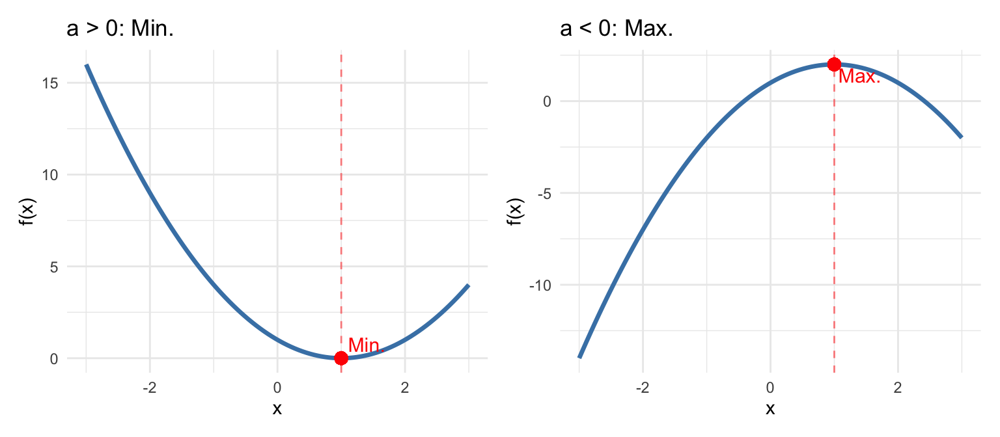
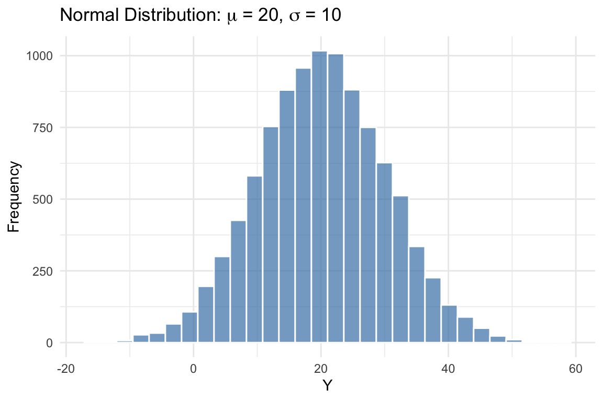
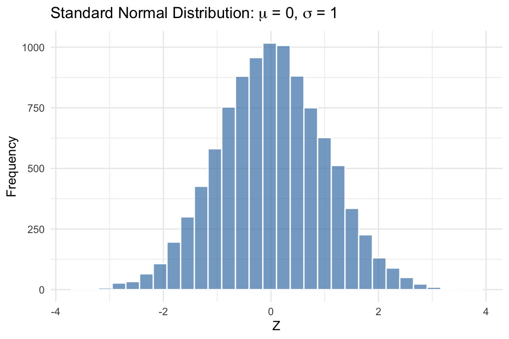

Appendix B — Statistics and Probability Review
Key Questions
- What are the properties of the summation operator?
- What are the key rules for logarithms, and why do economists use logs so often?
- How do we interpret derivatives and partial derivatives?
- How do we find the maximum or minimum of a function?
- What is the difference between a population and a sample?
- What is a random variable and how do we describe its distribution?
- How do we measure central tendency, variability, and relationships between variables?
- What is the normal distribution and why is it important?
Suggested Readings
- Wooldridge (2019), Appendix A, B, and C
This appendix reviews the essential mathematical and statistical concepts that form the foundation for econometrics. If you’ve taken introductory statistics or calculus, much of this material will be familiar. However, econometrics uses these tools in specific ways, so it’s worth reviewing them with an eye toward how they’ll appear throughout the course.
B.1 Basic Mathematical Tools
B.1.1 The Summation Operator
The summation operator provides a compact way to write the sum of a sequence of numbers. If \(\{x_i: i = 1, 2, ..., n\}\) is a sequence of \(n\) numbers, then the sum of these numbers is written as:
\[ x_1 + x_2 + ... + x_n = \sum_{i=1}^{n} x_i \]
The symbol \(\Sigma\) (capital Greek letter sigma) tells us to add up the terms. The expression \(i=1\) below the sigma indicates that we start counting at \(i=1\), and the \(n\) above tells us to stop at \(i=n\).
B.1.1.1 Properties of Summation
The summation operator has several useful properties that we will use frequently.
Property 1: Summing a constant. If we add a constant \(c\) to itself \(n\) times, we get \(n\) times the constant:
\[ \sum_{i=1}^{n} c = nc \]
Property 2: Factoring out constants. We can pull constants outside the summation:
\[ \sum_{i=1}^{n} cx_i = c \sum_{i=1}^{n} x_i \]
Property 3: Separating additive terms. Sums can be split across addition:
\[ \sum_{i=1}^{n} (ax_i + by_i) = a\sum_{i=1}^{n} x_i + b\sum_{i=1}^{n} y_i \]
Common Mistakes with Summation
These properties do not extend to division or multiplication in the ways you might expect.
We cannot break up divided expressions: \[ \sum_{i=1}^{n} \frac{x_i}{y_i} \neq \frac{\sum_{i=1}^{n} x_i}{\sum_{i=1}^{n} y_i} \]
We cannot break up multiplicative expressions: \[ \sum_{i=1}^{n} x_i^2 \neq \left(\sum_{i=1}^{n} x_i\right)^2 \]
B.1.1.2 The Sample Mean
Given \(n\) numbers \(\{x_i: i = 1, 2, ..., n\}\), we can compute their average or mean value by adding them up and dividing by \(n\). The average value, denoted \(\bar{x}\) (read “x-bar”), is written as:
\[ \bar{x} = \frac{1}{n} \sum_{i=1}^{n} x_i \]
The average is an example of a descriptive statistic: a value that describes or summarizes a characteristic of a set of data points. In this case, the mean describes the central tendency of \(x_i\)—where the “middle” of the data lies.
B.1.1.3 Useful Summation Results
Two results involving summations will appear repeatedly in this course.
Result 1: Deviations from the mean sum to zero. The sum of the deviations \((x_i - \bar{x})\) from the mean always equals zero:
\[ \sum_{i=1}^{n} (x_i - \bar{x}) = 0 \]
This can be proven using the properties above:
\[ \sum_{i=1}^{n} (x_i - \bar{x}) = \sum_{i=1}^{n} x_i - \sum_{i=1}^{n} \bar{x} = \sum_{i=1}^{n} x_i - n\bar{x} = n\bar{x} - n\bar{x} = 0 \]
The last step follows because \(\bar{x} = \frac{1}{n}\sum_{i=1}^{n} x_i\) implies \(n\bar{x} = \sum_{i=1}^{n} x_i\).
Result 2: Sum of squared deviations. The sum of squared deviations can be rewritten as:
\[ \sum_{i=1}^{n} (x_i - \bar{x})^2 = \sum_{i=1}^{n} x_i^2 - n\bar{x}^2 \]
More generally, for two variables \(x\) and \(y\):
\[ \sum_{i=1}^{n} (x_i - \bar{x})(y_i - \bar{y}) = \sum_{i=1}^{n} x_i y_i - n\bar{x}\bar{y} \]
These identities are useful for computing variances and covariances, which we will discuss shortly.
B.1.2 Derivatives
The derivative \(\frac{dy}{dx}\) of a function \(y = f(x)\) measures its instantaneous rate of change. It tells you how sensitive the function’s output is to a small change in its input. In econometrics, derivatives help us interpret how changes in independent variables affect dependent variables.
Here are derivatives of some common functional forms in econometrics:
| Function | Derivative |
|---|---|
| \(y = \beta_0 + \beta_1 x\) | \(\frac{dy}{dx} = \beta_1\) |
| \(y = \beta_0 + \beta_1 x + \beta_2 x^2\) | \(\frac{dy}{dx} = \beta_1 + 2\beta_2 x\) |
| \(y = \beta_0 + \frac{\beta_1}{x}\) | \(\frac{dy}{dx} = -\frac{\beta_1}{x^2}\) |
| \(y = \beta_0 + \beta_1 \ln(x)\) | \(\frac{dy}{dx} = \frac{\beta_1}{x}\) |
Notice that in the linear case, the derivative is simply the coefficient \(\beta_1\)—the effect of \(x\) on \(y\) is constant. In the other cases, the derivative depends on the value of \(x\), meaning the effect of \(x\) on \(y\) varies depending on where you start.
B.1.3 Percentages and Percent Changes
Understanding percentages is essential for econometrics. Many economic variables are reported as percentages (unemployment rate, interest rates, inflation), and we frequently describe changes in percentage terms. Getting the language right matters—confusing “percent” with “percentage points” is a common source of errors.
B.1.3.1 Percentages
A percentage expresses a number as a fraction of 100. To convert a decimal to a percentage, multiply by 100:
\[0.25 = 25\%\]
To convert a percentage to a decimal, divide by 100:
\[25\% = 0.25\]
In econometrics, we typically work with decimals in our calculations and convert to percentages for interpretation.
B.1.3.2 Percent Change
The percent change (or percentage change) measures how much a variable changed relative to its initial value:
\[\text{Percent Change} = \frac{\text{New Value} - \text{Old Value}}{\text{Old Value}} \times 100\%\]
Or more compactly:
\[\%\Delta Y = \frac{Y_2 - Y_1}{Y_1} \times 100\%\]
Example: If wages increase from $20 to $22 per hour:
\[\%\Delta wage = \frac{22 - 20}{20} \times 100\% = \frac{2}{20} \times 100\% = 10\%\]
Wages increased by 10 percent.
Percent Change vs. Percentage Point Change
These are not the same thing! This distinction trips up many students.
- Percent change: The change relative to the starting value
- Percentage point change: The arithmetic difference between two percentages
Example: If the unemployment rate rises from 4% to 5%:
- The percentage point change is: \(5\% - 4\% = 1\) percentage point
- The percent change is: \(\frac{5 - 4}{4} \times 100\% = 25\%\)
Both statements are correct:
- “Unemployment rose by 1 percentage point”
- “Unemployment rose by 25 percent”
They mean very different things! In news and policy discussions, this distinction matters enormously.
B.1.3.3 When to Use Which
Use percentage points when:
- Describing changes in variables already measured as percentages (interest rates, unemployment rates, test scores out of 100)
- You want to describe the absolute change in the percentage
Use percent change when:
- Describing changes in levels (wages, prices, GDP, population)
- You want to describe the relative or proportional change
Example: An interest rate cut from 5% to 4% is:
- A 1 percentage point decrease ✓
- A 20% decrease ✓ (both are correct, but mean different things)
A 1% decrease✗ (this is ambiguous and often wrong)
B.1.3.4 Calculating Values After Percent Changes
If \(Y\) increases by \(p\%\), the new value is:
\[Y_{new} = Y_{old} \times (1 + p/100)\]
If \(Y\) decreases by \(p\%\), the new value is:
\[Y_{new} = Y_{old} \times (1 - p/100)\]
Example: If a $50 item increases in price by 20%:
\[Price_{new} = 50 \times (1 + 0.20) = 50 \times 1.20 = \$60\]
B.1.3.5 Compounding Percent Changes
Percent changes don’t add—they compound. If wages increase by 10% and then by another 10%, the total increase is not 20%.
\[\text{Final} = \text{Initial} \times 1.10 \times 1.10 = \text{Initial} \times 1.21\]
The total increase is 21%, not 20%.
This is why we use logarithms: log changes do add up, making them convenient for analyzing growth over time.
B.1.4 Logarithms
Logarithms appear constantly in econometrics. We use them to model percentage changes, interpret coefficients as elasticities, and transform skewed variables like income and wages. Understanding log rules is essential for working with regression models.
B.1.4.1 What is a Logarithm?
The natural logarithm, denoted \(\ln(x)\), is the inverse of the exponential function \(e^x\). If \(y = \ln(x)\), then \(e^y = x\).
Some key values to remember:
- \(\ln(1) = 0\) because \(e^0 = 1\)
- \(\ln(e) = 1\) because \(e^1 = e\)
- \(\ln(x)\) is only defined for \(x > 0\)
B.1.4.2 Essential Log Rules
Three rules form the foundation for working with logarithms:
Rule 1: Product Rule. The log of a product is the sum of the logs: \[\ln(ab) = \ln(a) + \ln(b)\]
Rule 2: Quotient Rule. The log of a ratio is the difference of the logs: \[\ln\left(\frac{a}{b}\right) = \ln(a) - \ln(b)\]
Rule 3: Power Rule. The log of a power brings the exponent down: \[\ln(a^k) = k \ln(a)\]
These rules are used constantly when manipulating regression equations and interpreting coefficients.
B.1.4.3 Logs and Percentage Changes
Here is the most important property of logs for econometrics:
The Key Insight
For small changes, the difference in logs approximately equals the percentage change: \[\ln(Y_2) - \ln(Y_1) \approx \frac{Y_2 - Y_1}{Y_1}\]
In other words: \(\Delta ln(Y) \approx \%\) change in Y
This approximation works well for changes up to about 20%. It follows from the quotient rule: \[\ln(Y_2) - \ln(Y_1) = \ln\left(\frac{Y_2}{Y_1}\right)\]
When \(Y_2\) is close to \(Y_1\), the ratio \(Y_2/Y_1\) is close to 1, and \(\ln(1 + x) \approx x\) for small \(x\).
Example: If \(\ln(wage)\) increases from 2.50 to 2.58, the change is \(0.08\). This means wages increased by approximately 8%.
B.1.4.4 Other Uses of Logs
Logarithms are useful in economics for several reasons:
Percentage interpretation: Coefficients in log models have natural percentage interpretations (more on this in Chapter 7).
Elasticities: In a log-log model like \(\ln(Y) = \beta_0 + \beta_1 \ln(X)\), the coefficient \(\beta_1\) is the elasticity—the percentage change in \(Y\) for a 1% change in \(X\).
Reducing skewness: Variables like income, wages, and prices are often right-skewed. Taking logs makes them more symmetric and closer to normal.
Multiplicative relationships: Logs transform multiplicative relationships into additive ones, which are easier to estimate with linear regression.
B.1.5 Partial Derivatives
When \(y\) is a function of multiple variables, say \(y = f(x_1, x_2)\), we use partial derivatives to measure how \(y\) changes with respect to one variable while holding the others constant.
The partial derivative of \(y\) with respect to \(x_1\), holding \(x_2\) constant, is denoted \(\frac{\partial y}{\partial x_1}\). Similarly, the partial derivative with respect to \(x_2\), holding \(x_1\) constant, is \(\frac{\partial y}{\partial x_2}\).
For example, if \(y = \beta_0 + \beta_1 x_1 + \beta_2 x_2\), then:
\[ \frac{\partial y}{\partial x_1} = \beta_1, \qquad \frac{\partial y}{\partial x_2} = \beta_2 \]
The concept of “holding other variables constant” is central to econometrics. When we estimate a regression coefficient, we are trying to measure the partial effect of one variable on the outcome, controlling for other factors.
B.1.6 Optimization: Maxima and Minima
In econometrics, we often need to find the value of a variable that maximizes or minimizes a function. For example, Ordinary Least Squares (OLS) regression finds coefficient estimates by minimizing the sum of squared residuals. Understanding optimization is essential for understanding how these estimates are derived.
B.1.6.1 Finding Critical Points
To find the maximum or minimum of a function \(f(x)\), we take the derivative, set it equal to zero, and solve for \(x\). The solutions are called critical points.
For example, consider the quadratic function:
\[ f(x) = ax^2 + bx + c \]
Taking the derivative and setting it equal to zero:
\[ \frac{df}{dx} = 2ax + b = 0 \]
Solving for \(x\):
\[ x^* = -\frac{b}{2a} \]
This critical point \(x^*\) is where the function reaches its maximum or minimum.
B.1.6.2 Determining Maximum vs. Minimum
How do we know if a critical point is a maximum or a minimum? We use the second derivative test. The second derivative tells us about the curvature of the function:
\[ \frac{d^2f}{dx^2} = 2a \]
The rule is:
- If \(\frac{d^2f}{dx^2} > 0\) at the critical point, the function is concave up (bowl-shaped), and we have a minimum
- If \(\frac{d^2f}{dx^2} < 0\) at the critical point, the function is concave down (hill-shaped), and we have a maximum
For our quadratic function \(f(x) = ax^2 + bx + c\):
- If \(a > 0\): The parabola opens upward, and \(x^* = -\frac{b}{2a}\) is a minimum
- If \(a < 0\): The parabola opens downward, and \(x^* = -\frac{b}{2a}\) is a maximum

Optimization in OLS
In OLS regression, we minimize the sum of squared residuals, which is a quadratic function of the coefficients. The second derivative is positive (the function is convex), confirming that the solution is indeed a minimum. This is why setting the first derivative equal to zero gives us the best-fitting line.
B.1.6.3 Optimization with Multiple Variables
When a function depends on multiple variables, we find critical points by setting all partial derivatives equal to zero simultaneously. For a function \(f(x_1, x_2)\):
\[ \frac{\partial f}{\partial x_1} = 0 \quad \text{and} \quad \frac{\partial f}{\partial x_2} = 0 \]
Determining whether a critical point is a maximum, minimum, or neither (a saddle point) requires examining the second partial derivatives, which we will encounter when deriving the OLS estimator.
B.2 Population vs. Sample
Before diving into probability, it’s important to understand the distinction between a population and a sample, as this distinction underlies all of statistical inference.
The population is the entire group of individuals, objects, or observations that we are interested in studying. For example, if we want to understand the wages of all U.S. workers, the population is every person employed in the United States. If we want to know the effect of a drug on blood pressure, the population might be all adults with hypertension.
In practice, we almost never observe the entire population. Instead, we collect data on a sample—a subset of the population. We might survey 5,000 workers rather than all 160 million, or run a clinical trial with 500 patients rather than everyone with hypertension.
The Goal of Statistical Inference
The fundamental goal of statistics is to use information from a sample to draw conclusions about the population. We observe sample statistics (like the sample mean \(\bar{x}\)) and use them to make inferences about population parameters (like the population mean \(\mu\)).
This distinction affects our notation:
| Concept | Population Parameter | Sample Statistic |
|---|---|---|
| Mean | \(\mu\) | \(\bar{x}\) |
| Variance | \(\sigma^2\) | \(s^2\) |
| Standard deviation | \(\sigma\) | \(s\) |
| Correlation | \(\rho\) | \(r\) |
Population parameters are typically denoted with Greek letters and are usually unknown. Sample statistics are computed from our data and are used to estimate the population parameters.
For example, if we want to know the average wage of all U.S. workers (\(\mu\)), we collect a sample and compute the sample mean (\(\bar{x}\)). Under certain conditions, \(\bar{x}\) is a good estimate of \(\mu\). Much of econometrics is about understanding when and how well sample statistics estimate population parameters, and quantifying the uncertainty in those estimates.
B.3 Probability Basics
B.3.1 Random Variables
A random variable is a variable whose value is determined by a random phenomenon. It represents a number, but the exact value is determined by chance. Examples include the outcome of a dice roll, whether a coin lands heads or tails, or the percentage of flights that arrive on time.
Most variables we work with in econometrics can be thought of as random variables. A person’s wage, years of education, or health status all have elements of randomness—we cannot perfectly predict them in advance.
B.3.2 Probability
Probability quantifies uncertainty. If \(X\) is a random variable that takes on \(k\) possible values \(\{x_1, x_2, ..., x_k\}\), then the probability that \(X\) takes a particular value \(x_j\) is denoted:
\[ p_j = P(X = x_j) \]
Each probability \(p_j\) must be between 0 and 1, and the probabilities must sum to 1: \(p_1 + p_2 + ... + p_k = 1\).
B.3.3 Probability Distributions
The probability density function (pdf), denoted \(f(x)\), gives the probability that a random variable takes on a particular value \(x\). For discrete random variables, \(f(x) = P(X = x)\).
The cumulative distribution function (cdf), denoted \(F(x)\), gives the probability that the random variable is less than or equal to \(x\):
\[ F(x) = P(X \leq x) \]
The cdf is useful for answering questions like “what is the probability that \(X\) is below some threshold?”
B.3.4 Expected Values
The expected value (or mathematical expectation) of a random variable \(X\), denoted \(E[X]\), represents the “average” outcome we would expect if we could repeat the random process many times. It is our population “best guess” for the value of \(X\). We often denote it with \(\mu\) or \(\mu_X\).
For a discrete random variable with pdf \(f(x)\), the expected value is the weighted average of all possible values, where the weights are the probabilities:
\[ E[X] = \sum_{j=1}^{k} x_j f(x_j) = \mu \]
Example: Let \(X\) be the outcome of rolling a fair six-sided die. Each value (1 through 6) has probability \(1/6\). The expected value is:
\[ E[X] = \frac{1}{6}(1) + \frac{1}{6}(2) + \frac{1}{6}(3) + \frac{1}{6}(4) + \frac{1}{6}(5) + \frac{1}{6}(6) = 3.5 \]
Notice that 3.5 is not a possible outcome of any single roll, but it is the average we would expect over many rolls.
B.3.4.1 Properties of Expected Values
The properties of expected values mirror those of the summation operator and are essential for working with regression models.
Property 1: Expected value of a constant. The expected value of a constant is simply that constant: \[E[c] = c\]
This makes intuitive sense: if there is no randomness, the “expected” value is just the value itself.
Property 2: Multiplication by a constant. Constants can be factored out of the expectation operator: \[E[cX] = cE[X]\]
If you double a random variable, its expected value doubles.
Property 3: Additivity (Linearity). The expectation of a sum equals the sum of expectations: \[E[X + Y] = E[X] + E[Y]\]
Importantly, this property holds regardless of whether \(X\) and \(Y\) are independent. This is one of the most useful properties in econometrics.
Property 4: Combining the above. Combining Properties 1, 2, and 3, we get the general linearity property: \[E[aX + bY + c] = aE[X] + bE[Y] + c\]
This is extremely useful for working with regression equations. If \(Y = \beta_0 + \beta_1 X + u\), we can take expectations of both sides and apply this property.
Property 5: Product of independent variables. If \(X\) and \(Y\) are independent random variables, then: \[E[XY] = E[X]E[Y]\]
Independence Required!
This property only holds when \(X\) and \(Y\) are independent. If they are correlated, \(E[XY] \neq E[X]E[Y]\) in general. In fact, \(E[XY] - E[X]E[Y] = \text{Cov}(X,Y)\).
Property 6: Expectation of a function (Jensen’s Inequality). In general, the expectation of a function is not equal to the function of the expectation: \[E[g(X)] \neq g(E[X])\]
For example, \(E[X^2] \neq (E[X])^2\). The difference between these two quantities is related to the variance: \(E[X^2] - (E[X])^2 = \text{Var}(X)\).
B.4 Measures of Variability
Knowing the central tendency of a variable is useful, but it doesn’t tell us everything. Two distributions can have the same mean but look very different if one is tightly clustered around the mean while the other is spread out. We need measures of variability or dispersion.
B.4.1 Variance
Let \(X\) be a random variable with mean \(\mu = E[X]\). The variance of \(X\), denoted \(\sigma^2\) or \(\text{Var}(X)\), measures how spread out the distribution is:
\[ \text{Var}(X) = E[(X - \mu)^2] = \sigma^2 \]
The variance is the expected squared deviation from the mean. Squaring serves two purposes: it ensures all deviations are positive (so positive and negative deviations don’t cancel out), and it gives more weight to observations far from the mean.
B.4.2 Standard Deviation
The standard deviation of \(X\), denoted \(\text{sd}(X)\) or \(\sigma\), is the positive square root of the variance:
\[ \text{sd}(X) = \sqrt{\text{Var}(X)} = \sigma \]
The standard deviation is often more interpretable than the variance because it is measured in the same units as \(X\) itself. If \(X\) is measured in dollars, the standard deviation is also in dollars, whereas the variance would be in “dollars squared.”
When computing the variance and standard deviation from a sample of \(n\) observations, we use the sample variance \(s^2 = \frac{1}{n-1}\sum_{i=1}^{n}(x_i - \bar{x})^2\) and sample standard deviation \(s = \sqrt{s^2}\). The \(n-1\) in the denominator (rather than \(n\)) is called Bessel’s correction and ensures the sample variance is an unbiased estimator of the population variance.
B.4.3 Covariance
A central concern in econometrics is understanding how variables move together. When \(X\) is large, is \(Y\) also large? Or is it small? Or is there no relationship at all?
The covariance quantifies the linear relationship between two random variables. Let \(X\) and \(Y\) be random variables with means \(\mu_X = E[X]\) and \(\mu_Y = E[Y]\). The covariance is defined as:
\[ \text{Cov}(X, Y) = E[(X - \mu_X)(Y - \mu_Y)] \]
The covariance measures how \(X\) and \(Y\) move together:
- Positive covariance: When \(X\) is above its mean, \(Y\) tends to be above its mean (and vice versa). The variables move in the same direction.
- Negative covariance: When \(X\) is above its mean, \(Y\) tends to be below its mean. The variables move in opposite directions.
- Zero covariance: There is no linear relationship between \(X\) and \(Y\).
B.4.4 Correlation Coefficient
The covariance tells us the direction of the relationship, but its magnitude depends on the scales of \(X\) and \(Y\), making it hard to interpret. The correlation coefficient standardizes the covariance to produce a unitless measure:
\[ \text{Corr}(X, Y) = \frac{\text{Cov}(X, Y)}{\text{sd}(X) \cdot \text{sd}(Y)} = \rho_{XY} \]
The correlation coefficient is always between \(-1\) and \(1\):
- \(\rho_{XY} = 1\): Perfect positive linear relationship
- \(\rho_{XY} = -1\): Perfect negative linear relationship
- \(\rho_{XY} = 0\): No linear relationship
Perfect correlations rarely occur in practice. Values of \(\rho_{XY}\) closer to \(1\) or \(-1\) indicate stronger linear relationships.
Correlation vs. Causation
Remember from Chapter 1: correlation does not imply causation! A strong correlation between \(X\) and \(Y\) tells us the variables move together, but it does not tell us whether \(X\) causes \(Y\), \(Y\) causes \(X\), or some third factor causes both.
B.4.5 Conditional Expectations
While correlation measures the overall linear relationship between two variables, we often want to describe how the expected value of one variable changes with another. This is where conditional expectations come in.
Let \(X\) and \(Y\) be random variables. The conditional expectation of \(Y\) given that \(X\) takes a specific value \(x\) is denoted:
\[ E[Y | X = x] \]
This asks: what is our “best guess” for \(Y\) when we know that \(X\) equals \(x\)?
Example: What is the expected wage (\(Y\)) for people with a college degree (\(X = 1\)) versus those without (\(X = 0\))? \(E[Y | X = 1]\) and \(E[Y | X = 0]\) answer these questions.
Conditional expectations are fundamental to regression analysis. When we estimate a regression of \(Y\) on \(X\), we are essentially modeling how \(E[Y | X]\) changes with \(X\).
B.5 Distributions
B.5.1 The Normal Distribution
The normal distribution (also called the Gaussian distribution) is the most important distribution in statistics and econometrics. Many naturally occurring phenomena are approximately normally distributed, and many statistical procedures assume normality.
A random variable \(X\) with mean \(\mu\) and variance \(\sigma^2\) that follows a normal distribution is denoted:
\[ X \sim N(\mu, \sigma^2) \]
The normal distribution has a characteristic “bell curve” shape: symmetric around the mean, with most observations clustered near the center and fewer observations in the tails.

Two key facts about the normal distribution:
- Approximately 68% of observations lie within one standard deviation of the mean (between \(\mu - \sigma\) and \(\mu + \sigma\))
- Approximately 95% of observations lie within two standard deviations of the mean (between \(\mu - 2\sigma\) and \(\mu + 2\sigma\))
B.5.2 The Standard Normal Distribution
The standard normal distribution is a special case of the normal distribution with mean 0 and variance 1:
\[ Z \sim N(0, 1) \]
The standard normal is important because any normal random variable can be converted to a standard normal through standardization. If \(X \sim N(\mu, \sigma^2)\), then:
\[ Z = \frac{X - \mu}{\sigma} \sim N(0, 1) \]
Standardization subtracts the mean (centering the distribution at zero) and divides by the standard deviation (scaling it to have unit variance).

The standard normal is what z-tables (or statistical software) use to compute probabilities. Once you standardize a variable, you can look up the probability of observing values in any range.
B.6 Summary
This appendix reviewed the mathematical and statistical foundations needed for econometrics. We covered the summation operator and its properties, which are essential for understanding formulas throughout the course. We introduced derivatives and partial derivatives, which help us interpret how changes in one variable affect another, and learned how to find and classify maxima and minima of functions. We distinguished between populations and samples—a fundamental concept for statistical inference. We then turned to probability, defining random variables, expected values, variance, covariance, and correlation. Finally, we introduced the normal distribution, which plays a central role in statistical inference.
B.6.1 Key Formulas
| Concept | Formula |
|---|---|
| Sample mean | \(\bar{x} = \frac{1}{n}\sum_{i=1}^{n} x_i\) |
| Percent change | \(\%\Delta Y = \frac{Y_2 - Y_1}{Y_1} \times 100\%\) |
| Value after % increase | \(Y_{new} = Y_{old} \times (1 + p/100)\) |
| Log product rule | \(\ln(ab) = \ln(a) + \ln(b)\) |
| Log quotient rule | \(\ln(a/b) = \ln(a) - \ln(b)\) |
| Log power rule | \(\ln(a^k) = k\ln(a)\) |
| Logs and % changes | \(\ln(Y_2) - \ln(Y_1) \approx \%\Delta Y\) |
| Derivative of ln(x) | \(\frac{d}{dx}\ln(x) = \frac{1}{x}\) |
| Critical point (quadratic) | \(x^* = -\frac{b}{2a}\) for \(f(x) = ax^2 + bx + c\) |
| Second derivative test | Max if \(f''(x^*) < 0\); Min if \(f''(x^*) > 0\) |
| Expected value | \(E[X] = \sum_{j=1}^{k} x_j f(x_j) = \mu\) |
| E[constant] | \(E[c] = c\) |
| E[linear combo] | \(E[aX + bY + c] = aE[X] + bE[Y] + c\) |
| E[product] (indep.) | \(E[XY] = E[X]E[Y]\) (if independent) |
| Variance | \(\text{Var}(X) = E[(X-\mu)^2] = \sigma^2\) |
| Standard deviation | \(\text{sd}(X) = \sqrt{\text{Var}(X)} = \sigma\) |
| Covariance | \(\text{Cov}(X,Y) = E[(X-\mu_X)(Y-\mu_Y)]\) |
| Correlation | \(\rho_{XY} = \frac{\text{Cov}(X,Y)}{\text{sd}(X) \cdot \text{sd}(Y)}\) |
| Standardization | \(Z = \frac{X - \mu}{\sigma}\) |
B.7 Check Your Understanding
For each question below, select the best answer from the dropdown menu. The dropdown will turn green if correct and red if incorrect. Click the “Show Explanation” toggle to see a full explanation of the answer after attempting each question.
Show Explanation
By Property 1 of summation, \(\sum_{i=1}^{n} c = nc\). Here, \(c = 3\) and \(n = 5\), so the sum is \(5 \times 3 = 15\).
This is a key result: deviations from the mean always sum to zero. This follows from the definition of the mean and the properties of summation.
The partial derivative \(\frac{\partial y}{\partial x_1}\) measures how \(y\) changes with \(x_1\) holding \(x_2\) constant. In a linear function, this is simply the coefficient on \(x_1\), which is \(\beta_1\).
For a quadratic function \(f(x) = ax^2 + bx + c\), the sign of \(a\) determines whether the critical point is a maximum or minimum. Here \(a = -3 < 0\), so the parabola opens downward and the critical point is a maximum. The second derivative is \(f''(x) = 2a = -6 < 0\), confirming concavity downward.
Sample statistics (like \(\bar{x}\)) are computed from data and used to estimate population parameters (like \(\mu\)). Parameters describe the population and are typically unknown; statistics describe the sample and are observable.
Variance measures how spread out a distribution is around its mean. The mean measures central tendency, covariance measures the relationship between two variables, and the pdf gives probabilities.
Positive covariance means that when \(X\) is above its mean, \(Y\) tends to be above its mean as well. Remember: covariance tells us about association, not causation!
The notation \(N(\mu, \sigma^2)\) specifies the mean and variance. Here, \(\mu = 100\) and \(\sigma^2 = 25\), so \(\sigma = \sqrt{25} = 5\).
Standardization centers the variable at zero (by subtracting \(\mu\)) and scales it to have unit variance (by dividing by \(\sigma\)). The formula is \(Z = \frac{X - \mu}{\sigma}\).
Percent change = (New - Old)/Old × 100% = (25 - 20)/20 × 100% = 5/20 × 100% = 25%. Note that $5 is the dollar change, not the percent change.
When a variable is already measured as a percentage (like an interest rate), we describe changes in percentage points. The rate fell from 6% to 4%, a difference of 2 percentage points. (Note: this is also a 33% percent decrease, since (6-4)/6 = 0.33, but “2 percentage points” is the clearer description.)
This is the product rule for logarithms: \(\ln(a) + \ln(b) = \ln(ab)\). A common mistake is thinking \(\ln(a) + \ln(b) = \ln(a+b)\), but this is incorrect!
The key insight for logs: differences in logs ≈ percentage changes. A change of 0.05 in ln(wage) corresponds to approximately a 5% change in wage. Multiply by 100 to convert to percentage.